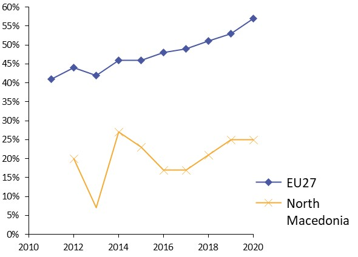
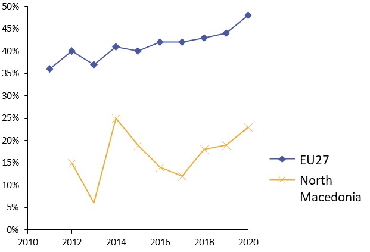
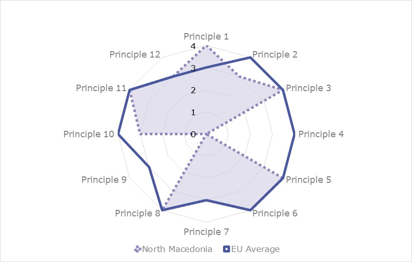
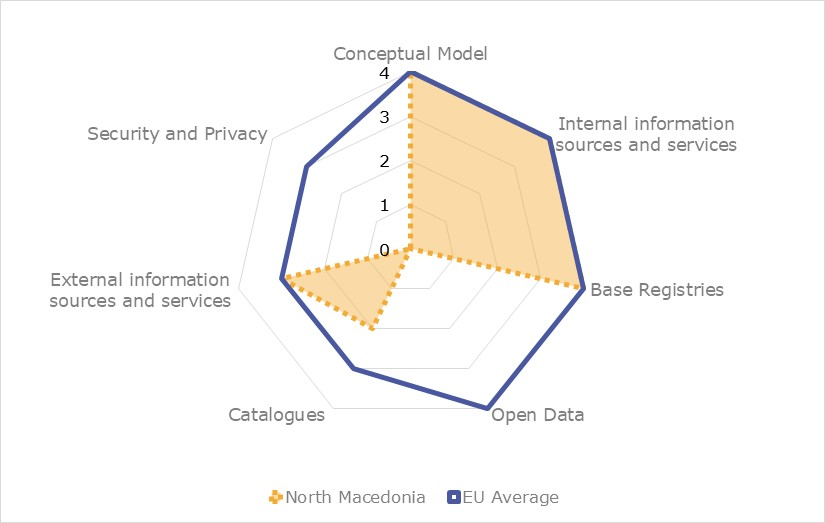

Digital Public Administration factsheet 2021
Republic of North Macedonia
Digital Public Administration factsheet 2021
Table of Contents
2 Digital Public Administration Highlights 9
3 Digital Public Administration Political Communications 11
4 Digital Public Administration Legislation 14
5 Digital Public Administration Governance 17
6 Digital Public Administration Infrastructure 20
7 Cross-border Digital Public Administration Services 23
Please note that the data collection exercise for the update of the 2021 edition of the Digital Public Administration factsheets took place between March and June 2021. Therefore, the information contained in this document reflects this specific timeframe.
Country
Profile
1
Country Profile
Basic data
Population: 2 072 532 inhabitants (2020)
GDP at market prices: 10 766.3 million Euros (2020)
GDP per inhabitant in PPS (Purchasing Power Standard EU 27=100): 38 (2020)
GDP growth rate: -4.5% (2020)
Inflation rate: 1.2% (2020)
Unemployment rate: 16.4 % (2020)
General government gross debt (Percentage of GDP): No data available
General government deficit/surplus (Percentage of GDP): -8.11%**
Area: 26 km²
Capital city: Skopje
Official EU language: Macedonian
Currency: MKD
Source: Eurostat (last update: 20 July 2021), Country Economy**
Digital Public Administration Indicators
The following graphs present data for the latest Generic Information Society Indicators for the Republic of North Macedonia compared to the EU average. Statistical indicators in this section reflect those of Eurostat at the time the Edition is being prepared.
Percentage of individuals using the internet for interacting with public authorities in North Macedonia | Percentage of individuals using the internet for obtaining information from public authorities in North Macedonia |
 |  |
Percentage of individuals using the internet for downloading official forms from public authorities in North Macedonia | Percentage of individuals using the internet for sending filled forms to public authorities in North Macedonia |
|
|


Interoperability State of Play
In 2017, the European Commission published the European Interoperability Framework (EIF) to give specific guidance on how to set up interoperable digital public services through a set of 47 recommendations. The picture below represents the three pillars of the EIF around which the EIF Monitoring Mechanism was built to evaluate the level of implementation of the EIF within the Member States. It is based on a set of 71 Key Performance Indicators (KPIs) clustered within the three main pillars of the EIF (Principles, Layers and Conceptual model), outlined below.

Source: European Interoperability Framework Monitoring Mechanism 2020
For each of the three pillars, a different scoreboard was created to breakdown the results into their main thematic areas (i.e. the 12 principles of interoperability, the interoperability layers and the components of the conceptual model). The thematic areas are evaluated on a scale from one to four, where one means a lower level of implementation and 4 means a higher level of implementation. The graphs below show the result of the second EIF Monitoring Mechanism data collection exercise for North Macedonia in 2020.

Source: European Interoperability Framework Monitoring Mechanism 2020
North Macedonia’s results in Scoreboard 1 show an overall good implementation of the EIF Principles, despite the lack of data for Principle 4 (Reusability) and Principle 9 (Multilingualism), scoring above the European average for Principle 1 (Subsidiarity and Proportionality). Areas of improvements are concentrated in the Principles 2 (Openness), 7 (Inclusion and Accessibility), 10 (Administrative simplification) and 12 (Assessment of Effectiveness and Efficiency) for which the score of 3 shows an upper-medium performance in the implementation of corresponding recommendations. Indeed, the publishing of data owned by the government as open data (Principle 2 – Recommendation 3), the use of e-accessibility specifications to ensure all public services are accessible to all citizens, including persons with disabilities, the elderly and other disadvantaged groups (Principle 7 – Recommendation 14), the simplification of processes and use of digital channels whenever appropriate for the delivery of European public services (Principle 10 – Recommendation 17) and the implementation of evaluation mechanisms to assess the effectiveness and efficiency of interoperable solutions (Principle 12 – Recommendation 19) are partial and could be bettered to reach the maximum score of 4.

Source: European Interoperability Framework Monitoring Mechanism 2020
The North Macedonian results for the implementation of interoperability layers assessed for Scoreboard 2 show an overall good performance with scores of 3 and 4, despite the lack of data for semantic interoperability. Potential areas of improvement to enhance the country’s implementation of the recommendations under Scoreboard 2 are concentrated in the areas of interoperability governance, legal interoperability and organisational interoperability. More specifically, the score of 1 for North Macedonia in Recommendation 28, stating that business processes should be documented using commonly accepted modelling techniques to ensure their alignment, lowers the overall organisational interoperability result for North Macedonia.

Source: European Interoperability Framework Monitoring Mechanism 2020
North Macedonia’s scores assessing the Conceptual Model in Scoreboard 3 show a good performance in the implementation of recommendations associated with the conceptual model, internal information sources and services and base registries, despite the lack of data for open data and security and privacy. However, some improvements can be made in implementing recommendations related to the catalogues as well as external information sources and services. Precisely, the lack of catalogues of public services, public data, and interoperability solutions (Catalogues - Recommendation 44) and the low use of external information sources and services while developing European public services (External information and services – Recommendation 45) hinder the overall North Macedonian score on the conceptual model.
Additional information on North Macedonia results on the EIF Monitoring Mechanism is available online through interactive dashboards.
eGovernment State of Play
The graph below presents the main highlights of the latest eGovernment Benchmark Report, an assessment of eGovernment services in 36 countries: the 27 European Union Member States, as well as Iceland, Norway, Montenegro, the Republic of Serbia, Switzerland, Turkey, the United Kingdom, Albania and Macedonia (referred to as the EU27+).
The study evaluates online public services on four dimensions:
- User centricity: indicates the extent to which a service is provided online, its mobile friendliness and its usability (in terms of available online support and feedback mechanisms).
- Transparency: indicates the extent to which governments are transparent about (i) the process of service delivery, (ii) policy making and digital service design processes and (iii) the personal data processed in public services.
- Cross-border services: indicates the extent to which users of public services from another European country can use the online services.
- Key enablers: indicates the extent to which technical and organizational pre-conditions for eGovernment service provision are in place, such as electronic identification and authentic sources.
The 2021 report presents the biennial results, achieved over the past two years of measurement of all eight life events used to measure the above-mentioned key dimensions. More specifically, these life events are divided between six ‘Citizen life events’ (Career, Studying, Family life, measured in 2020, and Starting a small claim procedure, Moving, Owning a car, all measured in 2019) and two ‘Business life events’ (Business start-up, measured in 2020, and Regular business operations, measured in 2019).

Source: eGovernment Benchmark Report 2020 Country Factsheets
Digital Public Administration Highlights
2
Digital Public Administration Highlights
Digital Public Administration Political Communications
In the same programme, the Minister of Information Society and Administration was tasked with establishing a central institution for coordination and implementation of the digitalization process in the society, but also full IT support for the state institution, and actively work on further digitalization of services and their availability through the National e-services Portal.
Digital Public Administration Infrastructure
During 2020, 9 804 citizens requested at least one eService on the National eServices Portal.
The number of the registered users, at any eID level on the National eServices Portal, is more than 31 000.
The most frequent eServices provided in 2020 were eServices as part of the anti-COVID measures, such as issuing more than 100 000 moving permits, issuing 2 500 vouchers for young people for ICT training, registering more than 350 educational legal entities as providers for ICT training for young people.
Digital Public Administration Political Communications
3
Digital Public Administration Political Communications
Specific political communications on digital public administration
Strategic Plans of the Ministry of Information Society and Administration
Public Administration Reform Strategy and Action Plan 2018–2022
- Policy creation and coordination;
- Public service and human resources management;
- Responsibility, accountability and transparency; and
- Service delivery, and information and communication technology (ICT) support to the administration.
Based on the priority areas, the PAR Strategy 2018–2022 has four specific objectives (SO):
- SO1: effective, efficient and inclusive policies;
- SO2: expert, professional and depoliticised administration;
- SO3: responsible, accountable and transparent operation of the institutions; and
- SO4: service provision in a fast, simple and easily accessible way.
To achieve the goal defined in the priority area of Service delivery and ICT support to the administration, measures and activities are undertaken which will lead to investments in the development of the digital environment. The quality and availability of public services will be increased to give access to eServices. Measures and activities include (i) the development of strategies, programmes and methodologies; (ii) analyses and projects based on the findings and recommendations from the analyses; (iii) research on introducing innovative solutions; (iv) simplifications and facilitation of processes; etc. One of the most important features is the active involvement of users in the process of defining and designing the services, which will be developed according to their needs.
After the election in July 2020, the appointed Prime Minister addressed the GRNM members through mandate letters in which he stated the tasks and objectives of their work so that he can verify whether these are actually performed and achieved at the end of the mandate. One of the objectives in the mandate letter issued to the Minister of Information Society and Administration on 3 September 2020 is to “continue to digitise and implement key public administration reforms to prepare [the public administration] for accession to the European administrative space, as well as to provide better and faster services to citizens and the business community”.
The tasks related more specifically to eGovernment include the following:
- To continue the digitisation of the work of the administration, and the services for the citizens and the business community;
- To establish, in the first year of the mandate, a central institution for coordination and implementation of the digitisation process in the society, but also for full information technology (IT) support for the State institutions;
- To provide, in the first two years of the mandate, an appropriate system solution for overall electronic communication within the institutions and between them;
- To enable, by the end of 2021, at least 30% of the State administration bodies to introduce an electronic system for automation of administrative procedures, and, by the end of 2024, the system to be introduced in all State administration bodies;
- To actively work on further digitisation of services and their availability through the National eServices Portal; and
- To enable full implementation of the agreement signed with the world company MasterCard for the development and implementation of innovative digital certificates of identity.
National Long-Term ICT Strategy
In the period January–November 2020, three key strategic documents were prepared: (i) State of Play: Analysis of the Current State-of-Affairs; (ii) National Long-Term ICT Strategy 2020–2025; and (iii) Action Plan on Implementation of Anticipated Goals. To prepare the three documents, visits were made to multiple institutions, State bodies, universities and chambers of commerce, i.e. all relevant subjects. In June, draft versions of the strategic documents were presented to members of the National ICT Council, the operational body thereof, the Digital Forum and the Broadband Competence Office (BCO) for inclusion of their initial remarks in the final document texts.
The National ICT Council adopted the National Long-Term ICT Strategy 2020-2025 in late December 2020. Due to the COVID-19 crisis, adoption by the GRNM was expected by mid-2021.
Interoperability
No political communication has been adopted in this field to date.
Key enablers
Access to public information
Agency Strategy for 2021-2025
In November 2020, the preparation of the Strategy for 2021-2025 for the Agency for the Protection of the Right to Free Access to Public Information and the relating Action Plan started within the IPA 2 project. The exercise was expected to be completed by the end of the first half of 2021. Among the main obligations of the Agency, the Action Plan includes the jurisdictions and the introduction of IT tools such as the ePortal that will enable the electronic submission of the request for free access to information holders and electronic portal in which it is planned to "build a network of holders".
Due to the COVID-19 pandemic, many of the planned IPA project activities from the tender documentation (ToR) have been postponed for implementation during 2021, such as the completion of the IT tools and their implementation for use in the Agency, the training of information holders for use of the IT tools and the preparation of transparency standards, including a methodology and an index for monitoring the proactive publication of categories of documents on the websites of holders, among other activities.
Strategy and Action Plan for Open Data 2018-2020
The Strategy and Action Plan for Open Data 2018–2020 were adopted in July 2018. The Open Data Strategy sets forth measures to be undertaken to encourage the release and use of public data and implement them broadly to contribute to raising the transparency and accountability of State institutions. More in detail, North Macedonia’s Open Data Strategy aims to develop a dynamic open data ecosystem in which data are produced, opened, enriched and reused by multiple actors from the public and private sector, civil society and academia. As a result, the Strategy will lead to improved public service delivery and public sector efficiency, increase public engagement, support efforts to combat corruption and contribute to the creation of an innovative climate that delivers new economic opportunities for the business sector.
The Strategy provides for the deployment of a central government Open Data Portal and defines a methodology for data inventory and conducting an inventory in State institutions. In addition, the Strategy introduces a licensing model for data, establishes a management structure and guidelines to facilitate the release of datasets, raises awareness and fosters the creation of public value through collaboration and partnerships with stakeholders from within and outside the public sector.
The Strategy also contributes to ensuring that North Macedonia meets the EU requirements on government transparency and accountability, and most specifically the goals set with the Directive on the re-use of public sector information and other measures supporting the opening up of public sector information.
Fourth Action Plan for the Open Government Partnership of North Macedonia
In September 2018, the GRNM adopted a fourth Action Plan for the Open Government Partnership 2018-2020. Just like under the previous action plans, for the following two years the GRNM committed to increase efforts to make public institutions open, transparent, accountable and efficient. The Action Plan implementation involved undertaking a number of activities for building citizen and business partnerships to design national policies and draft national legislation, strategies and initiatives. Additionally, interactive web portals were established to facilitate the consultation process, increase transparency and allow for participation in discussions.
In order to achieve full compliance with the requirements arising from this initiative, and following the Guidelines for Management of and Participation in the Open Government Partnership initiative and the Standards for Co-creation and Design of a Multi-stakeholder Forum, the Minister of Information Society and Administration adopted a Decision for the Establishment of the Council for Coordination and Monitoring of the Open Government Partnership Process and the National Action Plan for Open Government Partnership 2018-2020, which provides additional conditions for the promotion of the partnership. The new body has a significant role to play and aims to maximise the participation of and cooperation between the institutions and the civil society in a structured way, by including relevant partners in the discussion and enabling the voices of all to be heard.
In September 2020, the process of co-creating the new, fifth National Action Plan for the Open Government Partnership 2021-2023 started, focusing on the priority areas related to (i) transparency, accountability, proactivity and inclusiveness; (ii) prevention of corruption and promotion of good governance; (iii) delivery of public services; and (iv) access to justice. Additionally, in order to improve the opportunities for timely information of citizens, non-governmental organisations (NGOs), business entities and State institutions, and their involvement in this initiative, MINA developed an online platform for the Open Government Partnership and launched the web portal www.ovp.gov.mk.
eID and Trust Services
Agreements and Legislation on Trust Services and Interoperability
In 2019, North Macedonia signed bilateral agreements on the mutual recognition of qualified trust services with Serbia and Montenegro.
In the first half of 2020, all bylaws arising from the Law on Electronic Documents, Electronic Identification and Trust Services were adopted, thereby establishing a comprehensive legal environment which is harmonised with the EU Regulation on electronic identification and trust services for electronic transactions in the internal market (eIDAS Regulation).
As part of the Berlin process, on 2 November 2020 а Memorandum of Understanding on Regional Interoperability and Trust Services was signed with Western Balkan partners. The document highlights joint actions and initiatives towards an enhanced regional cooperation to support digital integration and exchange of information in an open, interoperable, secure and reliable way, giving priority to regional interoperability and trust services.
Public Administration Reform Strategy 2018–2022
The digital transformation, the global trends for public sector reforms and the increased ICT application transformed the environment in which the public sector functions. During the last decade, significant attention was paid to reforms aimed at better providing public services. Considering that competition in the private sector contributed to an increased quality of service provision for end users, Macedonian citizens expect the same from the public sector. In this context, the Public Administration Reform Strategy 2018–2022 aims to develop digital settings that provide easy access to eServices and contains dedicated measures regarding electronic identification (eID) and trust services, specifically in its SO4 on service delivery and ICT support to the administration. In addition, SO3 implies building a functional infrastructure for the delivery of eServices to clients through the digitisation of all required components. The measures to be taken for this priority are the following:
- Introduction of an electronic identity for using eServices in accordance with good European practices and the conditions in the country;
- Digitalisation of service registers, prioritising core registers that are not in a digital form, harmonising the legal provisions with the needs of digitisation and digitising registers in accordance with the adopted and existing standards, as well as maintaining, applying and updating the Population Register. When designing and implementing the application solutions that will use data from digital registers, technical, administrative and organisational measures will be applied to reduce the risk of unauthorised access to data in the registers; and
- Strengthening of the mechanisms for availability of public information related to the implementation of Article 10(1) of the Law on Free Access to Public Information (2019), in alignment with activity 6.1.5 on monitoring of websites of holders of information. To fulfil this priority, in 2020 the websites of 121 State administration bodies were analysed. All of these State administration bodies are information holders according to the law. Based on the established methodology, the monitoring of 11 categories of documents that the institutions are obliged to publish is in accordance with Article 10(1) of the new Law on Free Access to Public Information.
Security aspects
National Cybersecurity Strategy and Action Plan 2018–2022
The National Cybersecurity Strategy 2018–2022 was first adopted in August 2018, while the Action Plan 2018–2022 was developed by the end of 2018. This strategic document fosters the development of a safe, secure, reliable and resilient digital environment, supported by high-quality capacities and based on cooperation and trust in the field of cybersecurity.
Тhe ‘5C’ goals of the strategy are:
- Cyber Resilience: building a cyber-resilient ICT infrastructure, identifying and implementing adequate solutions to protect the national interests;
- Cyber Capacities and Culture: promoting a cybersecurity culture to raise the public awareness and understanding of cyber threats, as well as building and advancing the necessary capacities for protection;
- Combating Cyber Crime: strengthening the national capacities for the prevention of, research on and adequate response to cybercrime;
- Cyber Defence: strengthening the capacities for the defence of the national interests, and reducing current and potential cyberspace risks; and
- Cooperation and exchange of information: promoting cooperation and exchange of information at the national and international level.
The document highlights the responsibilities of the authorities identified in the strategy for the support of the goals and activities outlined in the document.
Interconnection of base registries
No political communication has been adopted in this field to date.
eProcurement
No political communication has been adopted in this field to date.
Domain-specific political communications
Strategy on ICT Development of the Customs Administration 2019–2023
The strategic objectives which the CA aims to achieve in the ICT sector are:
- Interconnectivity and interoperability with the EU ICT systems;
- Modernisation of the ICT environment;
- Application of modern technologies and practices for implementing business requirements; and
- Modernisation of the use of the internet, intranet and social networks in customs operations.
Emerging Technologies
No political communication has been adopted in this field to date.

Digital Public Administration Legislation
4
Digital Public Administration Legislation
Specific legislation on digital public administration
Law on Electronic Management and Electronic Services
The Law on Electronic Management and Electronic Services (Official Gazette No. 98/2019) regulates the operations during the electronic exchange of data and documents, and the provision of eServices, when stipulated by law, of (i) ministries; (ii) other State administration bodies, governing organisations and local self‑government units; (iii) legal entities entrusted to perform public competences; and (iv) legal entities delivering and providing public interest services, i.e. entities within the area of education, health, finances, banking, insurance, energy, water supply, electronic communications, postal services and utilities. The law also regulates the issues related to the establishment and functioning of the National eServices Portal, the Catalogue of Public Services, the Single Point of Service and interoperability.
Interoperability
Law on Services
The obstacles encountered when starting an economic activity and providing service activities necessitated the adoption of a general legal framework in the service sector, in line with the EU Internal Market Services Directive 2006/123/EC (Services Directive). The framework was intended to ensure (i) the smooth movement of services through the removal of legal and administrative restrictions for performing service activities; (ii) the establishment of one place where service providers can submit requests for the necessary licensing procedures electronically; (iii) the promotion of cooperation among regulators from individual countries; and (iv) the improvement in the quality of services.
The Law on Services was adopted by Parliament on 21 May 2019 (Official Gazette No. 98/2019) as horizontal framework law in the service sector. It provides the general legal framework for accessing the market of services and providing service activities by determining basic principles, including the principles of non-discrimination and simplification of the approval procedures. The activities to align the sector-specific legislation with the law are currently underway.
Furthermore, the law regulates the functioning of the Point of Single Contact (PSC), which will electronically provide the necessary information and assistance with regard to the procedures for market access and service provision. According to the law, the National eServices Portal, developed by MINA and launched in December 2019, will function as PSC.
National Interoperability Framework
The National Interoperability Framework has been in force since 2015, with the Law on Electronic Management and Electronic Services as legal basis. The National Interoperability Framework consists of legal, organisational, semantic and technical aspects. Based on the European Interoperability Framework (EIF) 2.0, the National Interoperability Framework is planned to be updated following the guidelines and recommendations stipulated in the latest iteration of the EIF.
Key enablers
Access to public information
Law on Public Sector Data Use
The Law on Public Sector Data Use was adopted in 2014, establishing the obligation for authorities and public sector institutions to publish the data created in the exercise of their responsibilities under the law. The law also enables natural or legal persons to create new information, content, applications or services.
The purpose of this law is the use of data from the public sector to foster (i) innovation; (ii) the creation of new information, content and applications by combining or crossing data, as well as new services and jobs; (iii) the promotion of social inclusion, increased accountability and transparency of the public sector, and improved quality of data from the public sector; (iv) the promotion of the economy and the development of competition; and (vi) the development of an information society in North Macedonia.
All data from the public sector are subject to the above-mentioned rules on use, except:
- Data excluded by the Law on Free Access to Public Information;
- Data with limited access by law;
- Data whose creation is not subject to the authority of an institution from the public sector;
- Data for which third parties have a right to intellectual property;
- Data belonging to the public broadcaster and its bureaus, and to the institutions responsible for public service broadcasting;
- Data belonging to educational or research bodies and institutions, including organisations founded for research results exchange; and
- Data belonging to institutions in the field of culture, except libraries, museums, and archives.
Activities planned for the course of 2021 include extending support to institutions in the data opening process through open data trainings, as well as conducting ex‑post/ex-ante analyses and preparing the law amending the Law on Public Sector Data Use, planned for December 2021 as per the Programme of the Government of the Republic of North Macedonia for 2021.
Law on Free Access to Public Information
In the Republic of North Macedonia, the right to free access to public information is a constitutionally guaranteed right (Article 16(3) of the Constitution of the Republic of North Macedonia). The first Law on the Protection of the Right to Free Access to Public Information (Official Gazette No. 13/2006) was implemented in 2006.
In the meantime, on 22 May 2019, the Parliament of the Republic of Northern Macedonia adopted a new Law on Free Access to Public Information (Official Gazette No. 101/2019).
In comparison with the previous law, some novelties are introduced under Article 30 of the current Law on Free Access to Public Information. According to this article, the Agency for the Protection of the Right to Free Access to Public Information, in addition to the competences it already had as Commission, gains additional powers in jurisdictions, especially in the area of conducting misdemeanour proceedings through its own Misdemeanour Commission and misdemeanour procedures. Additionally, the new law also increases the number of institutions that are obliged under the law to be registered as information holders. It also aims to increase the transparency of public institutions (Article 10) or extend the list of information that institutions must publish on their websites, among others.
In March 2020, the Agency Director, fulfilling her legal obligation under Article 34 of the Law on Free Access to Public Information, prepared bylaws to facilitate the implementation of the Guidelines on the Manner of Implementation of the Law on Free Access to Public Information of 2019 (Official Gazette No. 60/2020). The document is relevant both for the regulation of access to information and its restrictions, and for the proper implementation of the law.
In addition, the Agency adopted a Decision on the Misdemeanour Commission Members and developed guidelines for its work and bylaws, such as the Guidelines on the Form and Content of the Misdemeanour Payment Order (Official Gazette No. 177/2020) and the Internal Guidelines on the Misdemeanour Procedure.
eID and Trust Services
Law on Electronic Documents, Electronic Identification and Trust Services
The Law on Electronic Documents, Electronic Identification and Trust Services (Official Gazette No. 101/2019) regulates and prescribes the creation, preservation and processing of electronic documents, electronic identification and trust services. The law also determines the manner of use of electronic documents, electronic signatures, electronic seals and electronic trust services in administrative and court proceedings.
The purpose of the law is to ensure an adequate level of security of the electronic identification means and in the provision of trust services. Furthermore, the law aims to establish the legal regime applicable to electronic signatures, electronic seals, electronic time stamps, electronic documents, electronic registered delivery services, website authentication services, and the manner of keeping the electronic signature or seal and their validation.
The Law on Electronic Documents, Electronic Identification and Trust Services is fully harmonised with the eIDAS Regulation, which the cited law transposes. With the enactment and entering into force of this law, the acting Law on Data in Electronic Format and Electronic Signature was repealed in September 2020.
Security aspects
Law on Personal Data Protection
The harmonisation of legislation in the area of personal data protection has been one of the government’s priority activities since 2002. In this context, the Law on Personal Data Protection (Official Gazette No. 7/2005, 103/2008, 124/2008, 124/2010, 135/2011, 43/2014, 153/2015, 99/2016 and 64/2018), amended to include recommendations by the European Commission, was drafted in 2004, adopted on 25 January 2005 and modified to fully comply with Directive 95/46/EC in 2008.
The law represents a lex generalis in the area of data protection in the country. According to the law, personal data shall be (i) fairly and lawfully processed; (ii) collected for specified, explicit and legitimate purposes; (iii) processed in a manner which is consistent and proportionate with these purposes, accurate and complete; and (iv) kept for no longer than the necessary timeframe for fulfilling the abovementioned purposes.
In February 2020, a new Law on Personal Data Protection, aligned with the General Data Protection Regulation (Regulation (EU) 2016/679), was adopted and published in the Official Gazette No. 42/2020. In addition, 13 by-laws arising from the new law were adopted by the Personal Data Protection Agency and published in the Official Gazette No. 122/2020.
Law on the Central Population Register
The Law on the Central Population Register (Official Gazette No. 98/2019) regulates the competent bodies, the structure and the content of the Central Population Register, the conditions applying to the Register as well as the exchange of information between the competent bodies and entities. With the establishment of the register, a unified and unique manner of database maintenance is to be determined, based on established standards and procedures, in accordance with the provisions of the law. The register’s information is available to the competent bodies and other entities determined by the law, and is used in accordance with the rules and conditions prescribed by the Law on Personal Data Protection.
Law on the Security of Network and Information Systems
The legal act transposing the Network and Information Security Directive (NIS Directive) is the Law on the Security of Network and Information Systems, also deriving from the already adopted National Cybersecurity Strategy of the Republic of North Macedonia. According to the National Programme for Adoption of the Acquis Communautaire (NPAA), the law is expected to be adopted by the end of 2021. In addition, the preparation of this law also concerns the fourth conclusions by the Sub-Committee on Innovation and Technology Development. In this context, the national authorities will intensify the efforts to implement the activities and create the legal framework provided by the National Cybersecurity Strategy.
The Law on the Security of Network and Information Systems was published on the Unique National Electronic Registry of Regulations of the Republic of North Macedonia (ENER) on 4 October 2019, with a consultation deadline of 50 days. Taking into consideration the commitment of the Republic of North Macedonia to undertake systemic measures for digitisation, the draft law was also delivered to the National BCO, that submitted adequate remarks for the improvement of the proposed systemic solutions.
Finally, to ensure a consistent alignment of the current economic and social situation in the Republic of North Macedonia with the transposition and implementation of the NIS Directive, the GRNM is considering few options for establishing a body acting as a single point of contact and CIRT Secretariat, pursuant to the NIS Directive.
Interconnection of base registries
Law on Electronic Management and Electronic Services
Under the Law on Electronic Management and Electronic Services, for the purpose of accomplishing their tasks determined by law, State bodies shall exchange data and documents electronically, and use unified nomenclatures in their mutual electronic communication, through the National Interoperability Platform. Additionally, the law stipulates the existence of a Catalogue of Public Services, as well as institutional persons responsible for the verification of data in the Catalogue of Public Services, Single Point of Services and proxy agents.
eProcurement
Law on Public Procurement
A new Law on Public Procurement was adopted in January 2019, harmonising the national legislation with EU Directives 2014/24/EU, 2014/25/EU and 2007/66/EU. The law came into force on 1 April 2019, further enhancing the use of electronic means in public procurement procedures by instituting mandatory eProcurement in all stages of the procurement procedure (ePublication of contract notices, eSubmission of electronic tenders, eEvaluation, eAuctions and eAward).
The Electronic System for Public Procurement remains the central ePlatform for the procurement system in the Republic of North Macedonia, enabling all of the abovementioned functionalities. A new module of eAppeal was also introduced, thus enabling economic operators to submit their appeals in electronic form through the system.
During 2019 and 2020 activities were undertaken to update the system in line with the new law. Currently, activities are ongoing for the development of an eMarketplace for low-value procurements. Also, red flags were developed and integrated in the system as anticorruption tools.
Domain-specific legislation
Law on Electronic Commerce
The Law on Electronic Commerce was initially adopted by Parliament on 26 October 2007 (Official Gazette No. 133/2007), transposing the European Directive on certain legal aspects of information society services, in particular electronic commerce, in the Internal Market (Directive on electronic commerce).
The law regulates information society services related to electronic commerce and commercial communication, along with the responsibilities of the providers of these services. In particular, the law enables electronic documents to be treated as official contracts and defines their legibility as paper documents. Also, the law outlines the form and validity of contracts in electronic form, demanding that those contracts be concluded by electronic means.
In 2011, the law was amended to include recommendations by the European Commission to fully comply with the Directive (Official Gazette No. 17/2011). Further amendments to the law (Official Gazette No. 104/2015, 192/2015 and 31/2020) were made for the purpose of aligning with the Misdemeanour Law.
Law on Archive Material
Adopted in 2012 (Official Gazette No. 95/2012), the Law on Archive Material regulates the protection, preservation, processing and use of archival material, as well as inspections and the responsibilities of the State Archive of the Republic of North Macedonia. For instance, the law provides for electronic documents to be kept in their original format following specific criteria for accessibility and integrity. The law was then amended in 2014 and 2015.
Emerging technologies
No legislation has been adopted in this field to date.

Digital Public Administration Governance
5
Digital Public Administration Governance
National
Policy
Ministry of Information Society and Administration
In September 2020, Mr Jeton Shaqiri was appointed as the new Minister of Information Society and Administration, replacing Mr Damjan Mancevski.
Jeton Shaqiri Minister of Information Society and Administration from 1 September 2020 Contact details: Ministry of Information Society and Administration 'Sv Kiril i Metodij' 54 1000 Skopje Tel.: +389(0)2 320-0870 Fax: +389(0)2 322-1883 Email: cabinet@mioa.gov.mk Source: http://mioa.gov.mk/ |
Government Ministries and State Bodies
Government ministries and State bodies are responsible for the development and monitoring of national and local/domain-specific strategies and policies.
Coordination
National ICT Council
The National ICT Council was established in February 2018 to prepare and monitor the implementation of the National ICT Strategy, as well as to provide guidance on annual public procurement plans, and technical specifications applying to the tender documentation for public sector institutions and the procurement of ICT equipment and/or software. The National ICT Council consists of the relevant ministers, thereby ensuring the coherence of strategic-level decisions across State institutions.
National Cybersecurity Council
The National Cybersecurity Strategy and Action Plan envisaged the establishment of a high-level body for defining new strategic directions and recommendations related to the cybersecurity segment, as well as for coordinating and monitoring the activities defined in the strategy and the accompanying action plan. At the end of 2019, the GRNM established the National Cybersecurity Council, consisting of the Ministers of Defence (MoD), Interior (MoI), and Information Society and Administration.
Broadband Competence Office
Digital Forum
The Digital Forum for Information and Communication Technologies was established in June 2018 (Official Gazette No. 107/2018) as an expert and advisory body in the field of information society. The Digital Forum provides for the coordination and participation of the public, private, civil society and academic communities in the development of the information society.
During 2020, one of the anti-COVID measures that the GRNM adopted was the granting of vouchers to young people for taking ICT-related courses. In this context, the Digital Forum was responsible for approving the private educational entities that applied for delivering ICT training. The whole process was performed electronically through the National eServices Portal, for both applicants and the Digital Forum.
Implementation
Government Ministries and State Bodies
Government ministries and State bodies at national and local level are responsible for the implementation of sectorial ICT and eGovernment projects.
Support
National ICT Council
The National ICT Council is supported by an Operational Body for Expert and Operational-Logistical Support, with the following responsibilities:
- Assist in the preparation of requests, strategic documents and proposals;
- Prepare reports with proposals for further action;
- Review good practices and propose measures to improve the situation;
- Cooperate with other operational working bodies and ICT groups;
- Participate, if necessary, in the sessions of the Council and other ICT support bodies;
- Review strategic documents and projects related to ICT; and
- Review and give opinions, suggestions and advice on other matters, at the request of the Council, related to the scope of work of the Council.
National Cybersecurity Council
Agency for the Protection of the Right to Free Access to Public Information
Consequently, as of the end of December 2019, the Agency for the Protection of the Right to Free Access to Public Information, as a legal successor to the Commission for the Protection of the Right to Free Access to Public Information, has fulfilled the legally prescribed conditions of operation and decision-making.
Interoperability coordination
Ministry of Information Society and Administration
Base registry coordination
No responsible organisations have been reported to date.
Audit
As an independent external auditor, SAO is conducting audit in accordance with the auditing standards of the International Organisation of Supreme Audit Institutions (INTOSAI), by applying high professional qualifications and continuous training of employees, who are the core value in its work.
The independence of the institution is determined by the State Audit Law, which regulates SAO competencies and its broad mandate for conducting regularity and performance audits, with unlimited access to all necessary information, documentation and records. SAO independently defines the annual work programme and decides on the topics and the entities to be subject to audit, as well as on the audit method and the contents of the reports on performed audits, without bias and free from external influences. In the last years, SAO has also been conducting IT audits as performance audits.
Starting from December 2019, SAO has been directly informing 160 stakeholders about the publication of audit reports. In addition, SAO introduced the audit report abstract, which contains the most important information of the report in an easy‑to‑read form, so as to facilitate understanding of the contents of audit reports. When a new final audit report is published, the media, news agencies, individual research journalists and civil society organisations are immediately informed with a link to the published report on the SAO website and an abstract from the report.
Data Protection
Personal Data Protection Agency
Subnational (federal, regional and local)
Association of Local Government Units
The Association of Local Government Units (ZELS) is a non-profit organisation and unique national association, including, on a voluntary basis, all 80 municipalities, with the City of Skopje as a separate unit of local self‑government. The Association was founded on 26 April 1972. The president of ZELS is a member of the National ICT Council.
ZELS’ unit supporting eServices for municipalities, called ZUSE, is an administrative unit that enables implementation of priority eServices at local level. It provides one central support for all municipalities regarding maintenance of eServices and ICT infrastructure for several State information systems that are being used by the municipalities.
Policy
Association of Local Government Units
In coordination with several government ministries, the Association of Local Government Units (ZELS) is responsible for the implementation of part of the Law on Construction Land, the Law on Building Permits and the Law on the Use and Management of the State/Local Inventory, providing the tools needed for implementation.
Coordination
No responsible organisations have been reported to date.
Implementation
No responsible organisations have been reported to date.
Support
No responsible organisations have been reported to date.
Interoperability coordination
No responsible organisations have been reported to date.
Base registry coordination
No responsible organisations have been reported to date.
Audit
No responsible organisations have been reported to date.
Data Protection
No responsible organisations have been reported to date.
Digital Public Administration Infrastructure
6
Digital Public Administration Infrastructure
Portals
National Portals
National eServices Portal
The first eServices Portal was established in 2003, as the single point of access to information on government services. The portal was the result of the government’s efforts to create a more efficient and transparent administration by presenting to the public all available services for both citizens and business entities. In December 2019, a new national portal was launched, offering, besides information on 789 services, the provision of 150 eServices for citizens, including payment and eDocument issuing. The new portal will closely relate with the National Central Population Register and offer single-sign-on for citizens. The link to the portal stayed unchanged.
One key component of the portal is the Catalogue of Public Services, whose data is published on the portal in three languages, and categorised by life events, categories and sub-categories, as well as the institutions responsible for the service (1 288 in total) and other tags. The catalogue is accessible only to authorised public servants. The user manual for the catalogue is available on the following link.
The portal was developed with the funds from the IPA 2 programme. The development of new eServices, as well as the integration of the existing ones into the portal and the introduction of legal entities (businesses) as portal users, are underway and are funded under the IPA 3 programme (‘Enhancing eGovernment’ project).
During 2020, 9 804 citizens requested at least one eService on the portal, while the number of the registered users, at any eID level, is more than 31 000. The most used eServices during 2020 were those relating to the anti‑COVID measures, such as the issuance of more than 100 000 moving permits and 2 500 vouchers for ICT training for young people, as well as the registration of more than 350 educational legal entities as providers of ICT training for young people.
Catalogue of Public Services
Service Delivery Platform
The Service Delivery Platform (eSDP) is a web-based solution enabling institutions to electronically manage administrative procedures by establishing internal business processes and resolving them within the system. The system is configurable with a multi-purpose architecture and can be used by a number of institutions by adapting it to the Law on the General Administrative Procedure (GAP) or the specific laws governing administrative procedures. The system is particularly useful for institutions that want to digitise business processes without having an IT capacity.
Unique National Electronic Registry of Regulations
The Unique National Electronic Registry of Regulations (ENER) is a portal where each draft of a law or bylaw must be published for public comments before being adopted by government and Parliament. To increase stakeholder inclusion in the process of policy making, implementation, monitoring and evaluation, the regulatory impact assessment (RIA) templates are also published together with the draft documents. A technical upgrade of ENER was carried out in 2019, with ENER now enabling the electronical submission of initiatives and proposals by stakeholders, as well as consultations on other acts and documents (policies, strategies, action plans, standards, guidelines, etc.).
Upgrading and Maintaining IT Systems in the Tax Administration
The ‘Development and Reengineering of Business Processes for the New Tax Integrated IT System IPA2/EUIF’ project was completed on 31 January 2019, together with the modelled business processes (BPM2), showing that the global business process chart needs to be re-engineered and integrated into the new IT system.
The Delegation of the EU has engaged an expert to analyse the technical specifications for software and hardware (including for the Disaster Recovery Centre), carry out a market analysis and prepare the tender documentation for the new Tax Integrated IT System in accordance with EU PRAG procedures. On the basis of the market analysis, a decision should be made on the financing of the new Tax Integrated IT System. The technical support to ensure quality control is foreseen in the twin project ‘Improving Tax Collection, and Tax and Customs Policy’.
Based on the redesigned business processes resulting from this project, the Public Revenue Office (PRO) started the realisation of several projects:
- The upgrade of the electronic personal income tax system (ePDD in Macedonian or ePIT) portal has started with the integration of the MPIN payroll reporting system and the PDD-DB application. The public administration is in the process of implementing the contract for upgrading and maintaining the eTax System, which is an external portal for taxpayers; and
- The upgrade of tax accounting and registry records applications, which are central to the main processes in the tax administration, has begun, providing inter alia:
- Improvement of services for taxpayers;
- Enhancement of the security of the information system of the PRO, and improvement of the technical and organisational measures for the protection of personal data;
- Improvement of the exchange of data with third parties in the country (Central Registry, Clearing House KIBS Ad Skopje, National Bank, Credit Bureau, Ministry of Finance, MINA, Ministry of Labour and Social Policy, Health Insurance Fund, CA, Pension and Disability Insurance Fund, Real Estate Cadastre, Employment Agency, MoI, Office for the Management of Registers of Births, Marriages and Deaths, State Statistical Office, State Labour Inspectorate, Directorate for Technological Industrial Development Zones, Association of Protective Companies, Civil Aviation Agency, Captains of Ports - Ohrid and others); and
- Establishment of data exchange with third parties abroad (tax administrations and international organisations).
ePersonal Income Tax Portal
The ePersonal Income Tax Portal (ePDD) was introduced in 2019 by the Public Revenue Office (PRO) on the basis of the changes in the Law on the Personal Income Tax (Official Gazette No. 190/2017) and the implementation of the IPA 2012 PPF project titled ‘Simplification of Procedures for Reporting and Payment of Personal Income Tax for Taxpayers - Individuals’, developing the business processes and software.
On 1 January 2018 a new procedure for calculating and paying the personal income tax liabilities was introduced. The tax is now calculated by submitting an electronic calculation for income and tax to the PRO through the new ePDD system. The portal allows citizens to access a pre-filled annual tax return document. The PRO prepares a pre-filled annual tax return on the basis of the data from the electronic calculations of the payers submitted through the ePersonal Tax Portal, the calculations for the salary submitted through the MPIN, as well as the data received from third parties. Citizens only need to confirm or correct the completed annual tax return.
The ePersonal Tax Portal counts 697 513 registered and approved user profiles of natural persons on the ePIT system. Out of 795 953 pre-filled annual tax returns, 626 491 were submitted electronically and only 6 420 were corrected by taxpayers.
Thanks to the introduction of new user-oriented services for the personal income tax, the administrative burden was reduced, and the obligation to submit some returns and reports to the PRO was abolished, in addition to a number of other benefits.
Open Data Portal
More in detail, the Open Data Portal provides/enables:
- An open data platform based on the best world practices;
- The opening of datasets in computer readable formats;
- A decentralised data management by institutions producing datasets in their day-to-day operations;
- The possibility of automatically collect (‘harvest’) datasets published by other open data portals;
- A statement of metadata for datasets; and
- An increased involvement of users in data reuse.
Each institution is responsible for the data published on the Open Data Portal, including complying with open data policies, removing sensitive elements from data before publishing, converting data to open formats, providing metadata of high quality, and regularly checking and updating data after publication.
A total of 266 datasets from 55 public sector institutions are published on the Open Data Portal. MINA implemented activities to support five institutions (Ministry of Local Self-Government, State Commission for the Prevention of Corruption, PRO, Agency for Real Estate Cadastre and State Market Inspectorate) in their data opening process.
In addition, during 2020, three open data trainings were organised and attended by 63 participants from 28 State institutions. Furthermore, with a view to continuously promote skills, the initial activities have started to prepare an automated open data webinar (video-training) to be published on the portal www.data.gov.mk.
Open Finance Portal
The public can access information about the name of the budget user making the payment, the type of expenditure according to the economic classification, the assets received, the date of the executed payment, etc. This data is updated twice per month and users are able to download it in an open format.
Refund of VAT on Individuals
A ‘MYVAT’ (MojDDV) application for citizens to submit receipts, which can be downloaded from the Play Store and App Store since 1 July 2019, was developed to scan the bar code from the receipts. The user profile of the ePersonal Income Tax Portal is used for registering in this system and as of 31 December 2019 the number of citizens registered was 213 055. Until then, 52 191 539 codes from receipts had been submitted.
Refund of VAT on Businesses
To speed up the administrative procedures for executing the VAT refund and offset procedure, a module for automatic refund and offsetting has been developed. Through an automation process, the system enables to process VAT refund requests in a shorter period.
Customs Declaration and Excise Processing System
The Customs Declaration and Excise Processing System (CDEPS) was officially launched in June 2019. The introduction of the CDEPS marked the start of a new, digital era for customs operations in the country. In particular, the CDEPS provides (i) a safe, interoperable electronic solution in line with the World Customs Organisation and EU standards; (ii) a completely paperless environment for customs (import and export) and excise procedures through the exchange of electronic data with economic operators and other government agencies; (iii) faster customs and excise procedures for economic operators; and (iv) full compatibility with the EU systems.
As of the end of 2020, around 11 000 economic operators and participants in the customs procedure were registered in the CDEPS and more than 660 000 declarations had been processed.
In 2020, the Excise System (EMCS) was fully developed and put into production within the CDEPS, completely supporting the implementation of the new Law on Excise Duties and the Law on Motor Vehicle Tax.
Single Window System for Import, Export and Transit Licenses
The Single Window System for Import, Export and Transit Licences (EXIM) includes all requirements by government agencies (i.e. 60 licenses/certificates from 11 government agencies) related to the cross-border movement of goods. EXIM was implemented in 2008 and is becoming more sophisticated each year, providing for greater efficiency and faster customs procedures. The number of registered users has been continuously growing, totalling around 7 150 at the end of 2020, with more than 102 600 licenses issued.
The system was upgraded in 2019, when it was integrated in the new CDEPS and the Integrated Tariff Environment (ITE). In the second quarter of 2020, a major improvement was introduced in the web services for data exchange with the CDEPS and goods discharge.
In the period August-September 2020, a new module was developed within the EXIM system that serves to record patients with COVID-19 and their contacts. It was developed in accordance with the needs of the State Sanitary and Health Inspectorate (SSHI) and in close cooperation with the CA. The data from the EXIM system are transferred to the RAAVIO system for automatic monitoring and stopping of persons who are trying to get out through the airports of the country.
National Single Window
In 2020, the Project for the Development and Implementation of a new National Single Window (NSW) System was launched within the Facilitation of Cross-Border Trade of Goods component of the Western Balkans Trade and Transport Facilitation project, financed by a World Bank loan. This project is expected to develop and implement a complete NSW, which is one of the most effective tools for facilitating cross‑border trade. The new NSW should meet the needs and requirements of the CA, other government institutions responsible for the cross-border flow of goods and the business community, in order to further facilitate and accelerate cross‑border trade, and align with the regulations and standards applied in the EU Member States.
The first activity of the project started in mid-October 2020, including the analysis of the applicable laws, the current situation and the existing problems, and the development of the new model of NSW (blueprint). The blueprint document will also include a business process model, a functional and technical architecture, and detailed technical specifications for the implementation of the system, including the software development and hardware needs. The preparation of this document will take place at the regional level, i.e. in the first phase a blueprint document will be prepared for the implementation of the NSW in North Macedonia, Albania and Serbia, including an annex detailing the specific needs and requirements for each country.
Integrated Tariff Environment
The Integrated Tariff Environment (ITE) is a centralised IT solution for managing customs tariffs, tariff and non-tariff measures, binding tariff information, customs quotas, samples and the customs duties calculator (TARIC, Quota2, Surveillance, EBTI, ISPP and ECICS). Even before the accession to the EU, the ITE provides the following advantages for economic operators in North Macedonia:
- Online (electronic) access through the TARIM module to information previously available in paper form (customs duties, VAT, excise and national non-tariff measures, and import and export restrictions);
- Access to information even after expiry;
- Access to the calculation module, allowing to accurately calculate customs and other duties, as well as to obtain information about the documents required for import and export;
- Faster, cheaper, easier and more transparent access to the information destined to economic operators; and
- Improved prevention and recognition of frauds.
The system was upgraded in 2019, when it was integrated in the new CDEPS and EXIM. During 2020, the tariff quota management module was upgraded; in August 2020 work started to upgrade the module for binding tariff information according to the prepared technical specification.
eEmployment
The Employment Service Agency is a portal for checking personal employment history data.
Portal for Health Insurance Services
The Portal for Health Insurance Services is meant for citizens, as well as medical institutions and businesses (pharmacists and general practitioner doctors).
ePension Portal
The ePension Portal allows citizens to check data from the Pension Insurance Register and submit a request for a decision on the use of the right to pension and disability insurance.
eGovernment Sessions
The upgraded portal for eGovernment Sessions is used by all ministries and a great number of State bodies. The portal allows to prepare and submit materials, and offers several collaborative functionalities.
UVMK Portal
The UVMK Portal allows to order and pay online birth, marriage and death certificates. Citizens then receive the official (paper) documents by registered mail.
On 27 February 2020, the Office for the Management of Registers of Births, Marriages and Deaths started issuing birth and marriage certificates signed with trusted digital certificates issued by KIBS. From 27 February 2020 till 31 December 2020 533 birth and marriage certificates were issued that way.
eCadastre Portal
The eCadastre Portal contains geospatial data and status of services. The portal was launched in 2010 and since then it has been upgraded every year with new functionalities, data and eServices.
eRegistration for Businesses
eRegistration is part of the one-stop-shop system and is a portal for registering businesses and other legal entities, making amendments and deletions, paying registration fees and obtaining certificates in electronic or paper format. In the process of registering a business, the portal also provides an option for automatic registration of authorised persons as first employees in the compulsory social insurance (registration with the Employment Agency and hence in the Pension and Health Funds) and applying for VAT registration with the PRO through the one-stop-shop system and the national interoperability platform.
My-Term Portal
In direct cooperation with healthcare institutions of all segments of healthcare, the Ministry of Health is taking intensive action to work on the healthcare digitisation process. Among other things, it manages MojTermin. MojTermin is a functional internet portal in the field of eHealth whose main goal is to establish automated work processes in coordination with all levels of healthcare, healthcare administration and pharmacies.
The national eHealth system MojTermin is continuously developed as a National Integrated Health Information System. Notably, the system collects data from three areas of health:
- Healthcare, including a scheduling system, waiting lists, eReferral, all created prescriptions and dispensed drugs in pharmacies, physicians’ activities plans, daily medical reports, and electronic health records (EHR), among others;
- Preventive healthcare, including scheduled exams, immunisation modules and prevention programmes; and
- Public health, including individual medical reports and Health Registers.
The system is integrated with the National Drug Register as well as with other national systems with which it exchanges data daily. The system is continuously being upgraded with new modules and new functionalities in the existing modules.
In particular, Moj Termin was upgraded with new modules to address COVID-19. The following new modules were developed and are now functional: (i) testing process for COVID-19; (ii) recording of patients receiving home treatment; and (iii) register of positive cases (including data from all laboratories performing testing). Additional modules are being developed to complete the entire recording process, from the testing itself, and the surveying and finding of contacts with a positive case, to the issuance of decisions for isolation.
Agency for the Protection of the Right to Free Access to Public Information
In May 2020 the Agency for the Protection of the Right to Free Access to Public Information started the process of developing and introducing additional IT tools - such as a document management system (DMS) and an electronic archive - within the new website of the Agency.
In addition, the integration of two new electronic portals is expected in 2021. The first is an ePortal for applicants whose main purpose will be to enable electronic submission of the request for free access to information holders. On the portal, the request will be transparently visible to all, both applicants and holders, as well as to the Agency. With the introduction of this novelty, the Agency hopes to simplify the electronic submission of requests for applicants and citizens. This portal will be taken over by Mysociety, more precisely by www.slobodenpristap.mk, which until now was in the possession of Metamorphosis and since 2021 is in the possession of the Agency.
The second electronic portal is addressed to information holders and aims to ‘build a network of holders’ based on the current list of the Agency, containing 1 440 holders. It will provide electronic access through the username and password of the holder, who will be obliged to use them during each login. By introducing this tool, the Agency hopes to simplify the electronic submission of annual reports, and to facilitate and improve communication with information holders.
The main goal of these ePortals is to improve the transparency of information holders and to raise public awareness, in order for the general public to resort more frequently to the law as applicant, and to strengthen the communication of the Agency with officials.
Subnational Portals
Public Bidding Portals
- The Information System for Public Land covers all the procedures established in the Law on Construction Land, implemented only through this eService; and
- The Information System for Building Permits covers all the procedures established in the Law on Building Permits, implemented only through this eService.
In these two systems, the procedures start when the user sends an electronic request submitted with a digital signature. The processing of all the required data is carried out in the system, and ends when the contract/decision/solution is received and digitally signed by the authority.
Additionally, the following software tools are also available:
- www.e-stvari.mk, for public auction/bidding regarding the sale and lease of real estate and movable property;
- www.rob.zels.org.mk, for exchange of information and activities at local level in the area of gender responsive budgeting.
Networks
The Government IT Network is designed to be the backbone communication infrastructure connecting all departments in a secure and interoperable environment. The aim of this project is to create a solid infrastructure among all government institutions. At the end of October 2008, a fibre optic connection was established bringing about the following benefits:
- Allow for a high degree of security in communications between institutions;
- Facilitate communication between institutions; and
- Reduce call costs.
According to the National Operational Broadband Plan (NOBP), by the end of 2029 all public institutions (schools, universities, research centres and other education institutions, healthcare facilities, ministries, courts, local self-governments, and other State authorities and bodies) should have symmetrical internet access with a speed of at least 1Gbps. To achieve this national broadband target, PE MRD will build and develop a National Backhaul Optical Infrastructure/Network connecting public institutions.
The construction of this network will use the free capacities of the existing optical infrastructure (optical cables, fibres, ducts, etc.) built with public funds. Such optical infrastructure is managed by MEPSO (State-owned company for electricity transmission via the high voltage network), Macedonian Railways, GAMA (company for natural gas transmission), MER (State-owned company for the construction of natural gas pipeline systems), ZELS and PE State Roads.
Data Exchange
Portal for Electronic Communication
The Portal for Electronic Communication (PEC) is an online system for the electronic exchange of documents with the CA of North Macedonia. The system enables external users to submit different types of requests to the CA in electronic form and to monitor the status of their requests in real time.
Web Services in the Area of Justice and Home Affairs
40 new web services were developed for the needs of the institutions in the area of Justice and Home Affairs, thereby establishing new data exchanges between institutions.
National Spatial Data Infrastructure
The National Spatial Data Infrastructure (NSDI) is not limited to distributing data and services, but includes the policy, management, technology, standards, financial and human resources necessary to achieve this goal.
Lidar Portal
eID and Trust Services
Digital Certificates
eID
When a citizen registers on the Single Sign-On System (SSO) on the National eServices Portal, an eID is created after a successful identity verification. eIDs are immaterial units containing person identification data, used for authentication for eServices provided by competent authorities and other entities providing services via the National eServices Portal. Different eID levels exist, depending on the reliability of the electronic identification verification in the registration and login process. The SSO supports the following eID levels: basic user profile, low level eID and high level eID.
Single Sign-On System
The Single Sign-On System (SSO) allows users to register and login to the National eServices Portal. At present, only natural persons can register on the SSO. Details on the SSO registration process are available here.
When logging in to the portal, the user is automatically redirected to the SSO to identify with his/her username and password or qualified electronic signature certificate. After a successful identification, the SSO sends an authentication token to the portal, which, in turn, enables access to the portal’s private section.
The national SSO is integrated with the authentication system of the PRO and uses the PRO as provider for the first identification of the citizen. The SSO is already being used by other institutions as identity provider on national level (e.g. the Office for the Management of Registers of Births, Marriages and Deaths). Activities for integrating additional institutions are ongoing, targeting three institutions by mid-2021.
The SSO supports the Open ID 2.0, SAML 2.0, WS Federation and OAuth 2.0 protocols.
eProcurement
eProcurement System
The Electronic System for Public Procurement (ESPP) is the national eProcurement portal which is used by all contracting authorities to conduct public procurement procedures. The Law on Public Procurement mandates that all public procurement procedures shall be conducted by using electronic means, notwithstanding the derogations to this rule in the EU Procurement Directives. The system is owned and developed by the Public Procurement Bureau (PPB), a body within the Ministry of Finance.
The portal provides a one-stop-shop for public procurement, thereby improving efficiency and transparency, streamlines complex procedures, and facilitates the interaction between businesses and government institutions. Moreover, the system is compliant with EU directives and supports all forms of public procurement. All public institutions and businesses can register with the system and obtain the obligatory digital certificates for posting tenders or sending bids. The latest version of the system, optimised for the newly adopted law and procurement procedures, was launched in 2019. Furthermore, the ESPP introduced an open data module on the public page, providing the general public with aggregated data on a number of procurement indicators. The PPB continues with the further development of the systems’ modules and the enhancement of the existing ones, significantly simplifying and facilitating the use of the application. The system covers all contracting authorities on both central and local level, and all stages of the procurement procedure:
- Publication of the annual procurement plans;
- Market analysis (technical dialogue);
- Publication of contract notices;
- Questions and answers by the economic operators during the period for the preparation of bids;
- Submission of electronic tenders;
- Electronic evaluation and clarification of tenders;
- eAuctions (optional);
- eAppeals;
- eAward;
- Publication of contract award notices and scanned contracts;
- Publication of the contract amendments with scanned changed contracts; and
- Publication of the notice for contract realisation.
Considering the above functionalities, the ESPP is the main tool providing transparency and efficiency in the public procurement system in North Macedonia.
In 2020, the PPB started developing a new platform only aimed at conducting small‑value procurements in a simplified and effective manner. The specific objective is to introduce two new innovative electronic tools for procurement: eMarketplace and eCatalogues. In particular, a new software platform should be developed for efficient electronic conduct of small-value procurement for goods and services up to the national threshold of EUR 10 000. The new platform will be supplementary to (and connected with) the current ESPP and is expected to be operational in 2022.
ePayment
The information systems of all institutions providing eServices also offer electronic payment with virtual POS terminals. One of the first introducing ePayment was the One-Stop-Shop Portal for eServices for Legal Entities, including among the provided eServices the registration of legal entities.
ePayment for eServices
The National eServices Portal offers an ePayment feature for the fees and administrative taxes due, in total, for the eServices requested on the portal, regardless of the institution issuing/delivering the service. The portal sends a package of data for each different payment to the bank chosen for payment transactions and clears each individual payment order to the Treasury or commercial banks. The necessary data for the payment form are part of the data relating to each service in the Catalogue of Public Services. The procedure for ePayment when applying for eServices is described in a bylaw of the Law for Electronic Management and Electronic Services.
Knowledge Management
Learning Management System
The Learning Management System (LMS) Portal, offering eLearning for administrative servants, enables SCORM packages to be uploaded and made available to all public servants. eCourses include a test, with a certificate generated for the participant if passed. In 2020, the LMS System was upgraded and migrated to cloud infrastructure, including the integrated module for video conferencing.
Human Resource Management Information System
The existing Human Resource Management Information System (HRMIS) includes, besides the register of public sector employees and organisational structures, a module for salary calculation.
In 2020, the Macedonian administration proceeded with the modernisation of the HRMIS by (i) integrating inter-institutional electronic exchange of documents with electronic signing; (ii) including single-sign-on authentication of users; (iii) improving and streamlining business processes by introducing a dedicated business process management module; (iv) ensuring quick and accurate search for information and report generation; (v) providing for integration with other systems; (vi) ensuring increased operational efficiency by introducing new functionalities and improving the existing ones; and (vii) providing for risk reduction and management through increased security and control of information access, reliability and data integrity.
Cross-border platforms
TESTA-ng Network
The government signed a memorandum of understanding with the EU on the quality and security requirements related to the connection to the TESTA-ng network for data exchange between EU Member States and candidates. In 2018, TESTA-ng was used by the Ministry of Transport and Communications for the Tachonet application.
New Computerised Transit System
The New Computerised Transit System (NCTS) is a modern tool using advanced technologies and electronic data processing for managing and controlling transit procedures in an efficient way through the exchange of electronic messages between economic operators and customs offices, as well as only between customs offices.
System of Electronic Exchange of Data
The System of Electronic Exchange of Data (SEED) involves the customs administrations in the Western Balkan Region.
Base registries
National Population Register
The newly established National Population Register was published in October 2019 as key enabler and one of the main cornerstones in the digitisation effort in North Macedonia. The register provides a unified and unique way of managing individual databases based on established standards and procedures. In particular, the National Population Register represents a single integrated data register for all citizens aggregating data on the entire population, and thus enabling the implementation and monitoring of public policies in the domain of population management and planning. In addition, the National Population Register provides access to personal data for the purpose of public services provided by competent authorities. Moreover, this initiative is a key milestone in the establishment of the national eID, as well as the provision of digital services to Macedonian citizens. With the National Population Register, a unique electronic number for persons (EEBG) was also introduced as mandatory information to access given personal data from the register. The key data providers are the MoI, the Ministry of Justice - Office for the Management of Registers of Births, Marriages and Deaths, and the Central Register of the Republic of Macedonia.
As a result, Macedonian authorities have access to a single official and reliable data source for population-related data, where each person is able to access and verify the personal data that is used for administrative proceedings by administration authorities. Importantly, this ensures compliance with the General Data Protection Regulation (GDPR).
Register of Rare Diseases
The Register of Rare Diseases records and monitors patients with rare diseases as well as data on therapy/medicines for rare diseases. It is part of the national system for electronic evidence in health. The register is not a public website and data cannot be accessed by the patient or unauthorised users, but only by authorised users with privileges.
Register of Diabetes
The Register of Diabetes records and monitors patients with diabetes and is also part of the national system for electronic evidence in health. The register is not a public website and data cannot be accessed by the patient or unauthorised users, but only by authorised users with privileges.
Register of Repossessed Real Estate Intended for Sale
The Register of Repossessed Real Estate Intended for Sale was established in December 2019. The legal conditions for the establishment and running of this register were created with the adoption of the Law on Modifications and Amendments to the Law on the Real Estate Cadastre.
Real estate intended for sale is real estate acquired within a procedure for collection of receivables or on other grounds. The register contains spatial and descriptive data for such real estate, as well as data on the entity possessing the real estate.
Emerging Technologies
No particular infrastructure in this field has been reported to date.

Cross-border
Digital Public Administration Services
7
Cross-border Digital Public Administration Services
Further to the information on national digital public services provided in the previous chapters, this final chapter presents an overview of the basic cross-border public services provided to citizens and businesses in other European countries. Your Europe is taken as reference, as it is the EU one-stop shop which aims to simplify the life of both citizens and businesses by avoiding unnecessary inconvenience and red tape in regard to ‘life and travel’, as well as ‘doing business’ abroad. In order to do so, Your Europe offers information on basic rights under EU law, but also on how these rights are implemented in each individual country (where information has been provided by the national authorities). Free email or telephone contact with EU assistance services, to get more personalised or detailed help and advice is also available.
Please note that, in most cases, the EU rights described in Your Europe apply to all EU member countries plus Iceland, Liechtenstein and Norway, and sometimes to Switzerland. Information on Your Europe is provided by the relevant departments of the European Commission and complemented by content provided by the authorities of every country it covers. As the website consists of two sections - one for citizens and one for businesses, both managed by DG Internal Market, Industry, Entrepreneurship and SMEs (DG GROW) - below the main groups of services for each section are listed.
Life and Travel
For citizens, the following groups of services can be found on the website:
- Travel (e.g. Documents needed for travelling in Europe);
- Work and retirement (e.g. Unemployment and Benefits);
- Vehicles (e.g. Registration);
- Residence formalities (e.g. Elections abroad);
- Education and youth (e.g. Researchers);
- Health (e.g. Medical Treatment abroad);
- Family (e.g. Couples);
- Consumers (e.g. Shopping).
Doing Business
Regarding businesses, the groups of services on the website concern:
- Running a business (e.g. Developing a business);
- Taxation (e.g. Business tax);
- Selling in the EU (e.g. Public contracts);
- Human Resources (e.g. Employment contracts);
- Product requirements (e.g. Standards);
- Financing and Funding (e.g. Accounting);
- Dealing with Customers (e.g. Data protection).
last update: October 2021
The Digital Public Administration Factsheets
The factsheets present an overview of the state and progress of Digital Public Administration and Interoperability within European countries.
The factsheets are published on the Joinup platform, which is a joint initiative by the Directorate General for Informatics (DG DIGIT) and the Directorate General for Communications Networks, Content & Technology (DG CONNECT). This factsheet received valuable contribution from Rozalinda Stojova (Ministry of Information Society and Administration).
The Digital Public Administration factsheets are prepared for the European Commission by Wavestone.
An action supported by Interoperable Europe
Interoperable Europe will lead the process of achieving these goals and creating a reinforced interoperability policy that will work for everyone. The initiative is supported by the Digital Europe Programme.
Follow us
Interoperable Europe